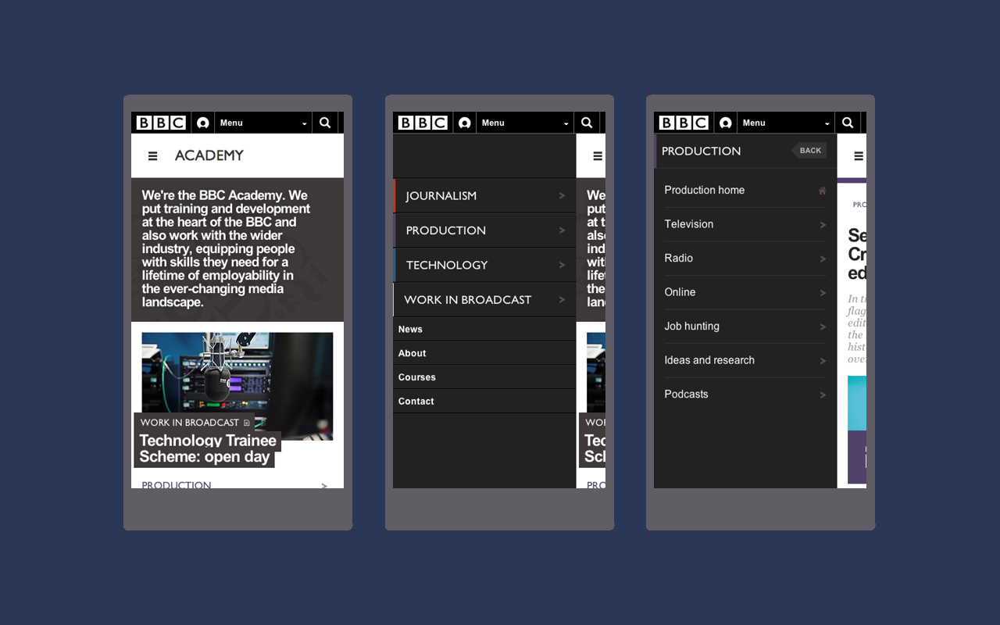
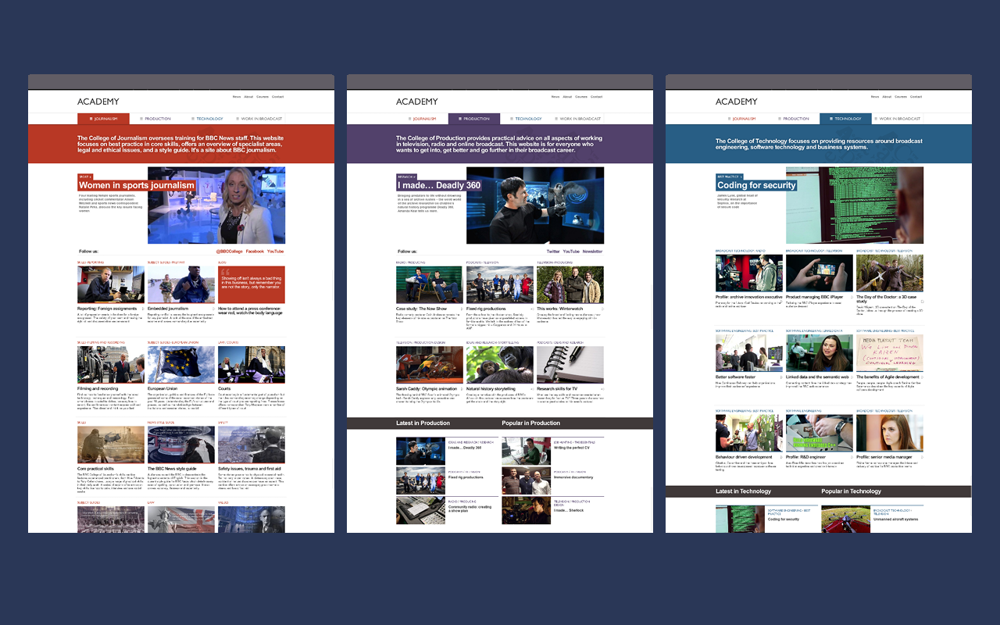

The BBC Academy is tasked to provide training and development to its staff and the wider industry, through the colleges of Journalism, Production and Technology.
Previously the colleges ran their own separate websites and many people were unaware of the purpose of the academy as a whole.
We were challenged with creating a publishing platform that would bring the colleges together into one presence; that would respect the content differences from each college, support many languages, work beautifully across all devices, and provide a cohesive experience for the audience.
The redesign gave a voice to the Academy as a whole. The homepage team is now able to highlight content from any of the colleges or create its own, showcasing the depth and breadth of what the Academy does.
Editors are able to promote content in the navigation at the college and category level. We used a panel-based approach to display the large variety of categories and subcategories throughout the colleges to reduce the need to click through to category pages.

The panel-based navigation continues on mobile devices.

Colour themes separate the colleges within the Academy.
Content can be featured on category and content lists.
This was one of the first BBC websites to be fully responsive, utilizing the new BBC Orb headers. Article pages are completely content-focused. Only minimal category information is diplayed alongside them. Articles may feature images, videos or podcasts.
The simple content focus allowed us to support multiple languages with ease. The Academy currently supports Arabic, Burmese, Chinese simplified, Chinese traditional, Hausa, Persian, Pashto, Russian, Swahili, Urdu, and Vietnamese.